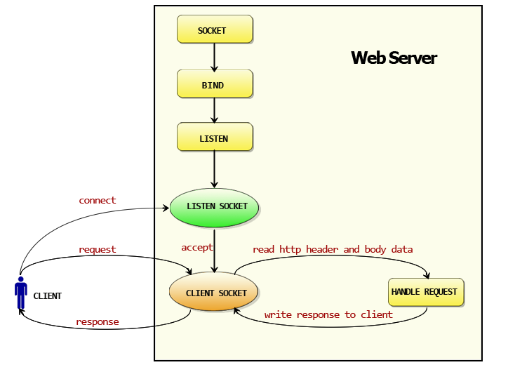

背景要提
net/http标准库可以分为客户端和服务器两个部分。以下是net/http标准库的各个组成部分的关于客户端和服务端的一个划分：
图片来源 - 《Go Web编程》
如何开始阅读源码，首先我们需要了解一下http包的执行流程:

主要步骤:
- 创建
Listen Socket, 监听指定的端口, 等待客户端请求到来 Listen Socket接受客户端的请求, 得到Client Socket, 接下来通过Client Socket与客户端通信- 创建
go线程服务一个连接，处理客户端的请求。 首先从Client Socket读取HTTP请求的协议头, 如果是POST方法, 还可能要读取客户端提交的数据。然后交给相应的handler处理请求,handler处理完毕准备好客户端需要的数据, 通过Client Socket写给客户端
接下来主要通过源码分析服务端的具体实现流程。
分析Http服务器的执行过程

编写一个简单的服务器
首先我们需要编写一个简单的服务器，然后逐步的对其中机制进行剖析，关于如何查看源码建议适用VSCode，VSCode安装相关包(godef等等)以后可以直接跳转到相关源码部分，当然也可以考虑直接去源码逐步看。1
2
3
4
5
6
7
8
9
10
11
12
13
14
15package main
import (
"fmt"
"net/http"
)
func main() {
http.HandleFunc("/hello", sayHello)
http.ListenAndServe(":8080", nil)
}
func sayHello(res http.ResponseWriter, req *http.Request) {
fmt.Fprintf(res, "hello")
}
注册路由
首先我们先分析http.HandleFunc("/hello", sayHello)，先查看一下源码:1
2
3
4
5
6// HandleFunc registers the handler function for the given pattern
// in the DefaultServeMux.
// The documentation for ServeMux explains how patterns are matched.
func HandleFunc(pattern string, handler func(ResponseWriter, *Request)) {
DefaultServeMux.HandleFunc(pattern, handler)
}
然后我们又遇到问题了，DefaultServeMux是什么玩意。这时还是需要继续查看相关的源码:1
2
3
4
5
6
7
8
9
10
11
12
13
14
15
16
17
18type ServeMux struct {
mu sync.RWMutex // 锁，由于请求涉及到并发处理，因此这里需要一个锁机制
m map[string]muxEntry // 路由规则，一个string对应一个mux实体，这里的string就是注册的路由表达式
hosts bool // 是否在任意的规则中带有host信息
}
type muxEntry struct {
h Handler // 这个路由表达式对应哪个handler
pattern string // 匹配字符串
}
// NewServeMux allocates and returns a new ServeMux.
func NewServeMux() *ServeMux { return new(ServeMux) }
// DefaultServeMux is the default ServeMux used by Serve.
var DefaultServeMux = &defaultServeMux
var defaultServeMux ServeMux
ServeMux结构体：HTTP请求的多路转接器（路由），它负责将每一个接收到的请求的URL与一个注册模式的列表进行匹配，并调用和URL最匹配的模式的处理器。它内部用一个map来保存所有处理器Handler。
DefaultServeMux，其实就是一个默认路由，是ServeMux的一个实例，使用包级别的http.Handle()、http.HandleFunc()方法注册处理器时都是注册到该路由中。我们来看看DefaultServeMux.HandleFunc(pattern, handler)中的HandleFunc方法
1 | // HandleFunc registers the handler function for the given pattern. |
然后只能继续看Handle方法的实现1
2
3
4
5
6
7
8
9
10
11
12
13
14
15
16
17
18
19
20
21
22
23
24
25// Handle registers the handler for the given pattern.
// If a handler already exists for pattern, Handle panics.
func (mux *ServeMux) Handle(pattern string, handler Handler) {
mux.mu.Lock()
defer mux.mu.Unlock()
if pattern == "" {
panic("http: invalid pattern")
}
if handler == nil {
panic("http: nil handler")
}
if _, exist := mux.m[pattern]; exist {
panic("http: multiple registrations for " + pattern)
}
if mux.m == nil {
mux.m = make(map[string]muxEntry)
}
mux.m[pattern] = muxEntry{h: handler, pattern: pattern}
if pattern[0] != '/' {
mux.hosts = true
}
}
代码还是比较直观的，就是将相关信息加入到map中。
了解完路由信息的注册，我们还需要知道路由信息是如何分发的。
监听端口、处理请求、路由分配
服务器中http.ListenAndServe()方法启动服务。但是其究竟是如何实现的呢，我们需要参考下源码1
2
3
4
5
6
7
8
9
10
11// ListenAndServe listens on the TCP network address addr and then calls
// Serve with handler to handle requests on incoming connections.
// Accepted connections are configured to enable TCP keep-alives.
//
// The handler is typically nil, in which case the DefaultServeMux is used.
//
// ListenAndServe always returns a non-nil error.
func ListenAndServe(addr string, handler Handler) error {
server := &Server{Addr: addr, Handler: handler}
return server.ListenAndServe()
}
首先生成了一个Server对象，然后调用了它的ListenAndServe方法。Server对象封装了有关提供web服务相关的所有信息，是一个比较核心的类。1
2
3
4
5
6
7
8
9
10
11
12
13
14
15
16
17
18
19
20
21
22
23
24
25
26
27
28
29
30
31
32
33
34
35
36
37
38
39
40
41
42
43
44
45
46
47
48
49
50
51
52
53
54
55
56
57
58
59
60
61
62
63
64
65
66
67
68
69
70
71
72
73
74
75
76
77
78
79
80
81
82// A Server defines parameters for running an HTTP server.
// The zero value for Server is a valid configuration.
type Server struct {
Addr string // TCP address to listen on, ":http" if empty
Handler Handler // handler to invoke, http.DefaultServeMux if nil
// TLSConfig optionally provides a TLS configuration for use
// by ServeTLS and ListenAndServeTLS. Note that this value is
// cloned by ServeTLS and ListenAndServeTLS, so it's not
// possible to modify the configuration with methods like
// tls.Config.SetSessionTicketKeys. To use
// SetSessionTicketKeys, use Server.Serve with a TLS Listener
// instead.
TLSConfig *tls.Config
// ReadTimeout is the maximum duration for reading the entire
// request, including the body.
//
// Because ReadTimeout does not let Handlers make per-request
// decisions on each request body's acceptable deadline or
// upload rate, most users will prefer to use
// ReadHeaderTimeout. It is valid to use them both.
ReadTimeout time.Duration
// ReadHeaderTimeout is the amount of time allowed to read
// request headers. The connection's read deadline is reset
// after reading the headers and the Handler can decide what
// is considered too slow for the body.
ReadHeaderTimeout time.Duration
// WriteTimeout is the maximum duration before timing out
// writes of the response. It is reset whenever a new
// request's header is read. Like ReadTimeout, it does not
// let Handlers make decisions on a per-request basis.
WriteTimeout time.Duration
// IdleTimeout is the maximum amount of time to wait for the
// next request when keep-alives are enabled. If IdleTimeout
// is zero, the value of ReadTimeout is used. If both are
// zero, ReadHeaderTimeout is used.
IdleTimeout time.Duration
// MaxHeaderBytes controls the maximum number of bytes the
// server will read parsing the request header's keys and
// values, including the request line. It does not limit the
// size of the request body.
// If zero, DefaultMaxHeaderBytes is used.
MaxHeaderBytes int
// TLSNextProto optionally specifies a function to take over
// ownership of the provided TLS connection when an NPN/ALPN
// protocol upgrade has occurred. The map key is the protocol
// name negotiated. The Handler argument should be used to
// handle HTTP requests and will initialize the Request's TLS
// and RemoteAddr if not already set. The connection is
// automatically closed when the function returns.
// If TLSNextProto is not nil, HTTP/2 support is not enabled
// automatically.
TLSNextProto map[string]func(*Server, *tls.Conn, Handler)
// ConnState specifies an optional callback function that is
// called when a client connection changes state. See the
// ConnState type and associated constants for details.
ConnState func(net.Conn, ConnState)
// ErrorLog specifies an optional logger for errors accepting
// connections, unexpected behavior from handlers, and
// underlying FileSystem errors.
// If nil, logging is done via the log package's standard logger.
ErrorLog *log.Logger
disableKeepAlives int32 // accessed atomically.
inShutdown int32 // accessed atomically (non-zero means we're in Shutdown)
nextProtoOnce sync.Once // guards setupHTTP2_* init
nextProtoErr error // result of http2.ConfigureServer if used
mu sync.Mutex
listeners map[*net.Listener]struct{}
activeConn map[*conn]struct{}
doneChan chan struct{}
onShutdown []func()
}
再回到刚刚说到的Server对象调用它自己的ListenAndServe方法1
2
3
4
5
6
7
8
9
10
11
12
13
14
15
16
17
18
19
20
21
22// ListenAndServe listens on the TCP network address srv.Addr and then
// calls Serve to handle requests on incoming connections.
// Accepted connections are configured to enable TCP keep-alives.
//
// If srv.Addr is blank, ":http" is used.
//
// ListenAndServe always returns a non-nil error. After Shutdown or Close,
// the returned error is ErrServerClosed.
func (srv *Server) ListenAndServe() error {
if srv.shuttingDown() {
return ErrServerClosed
}
addr := srv.Addr
if addr == "" {
addr = ":http"
}
ln, err := net.Listen("tcp", addr)
if err != nil {
return err
}
return srv.Serve(tcpKeepAliveListener{ln.(*net.TCPListener)})
}
ln是一个监听tcp指定端口的监听器，接着把监听器ln断言转换为TCPListener类型，并根据它构造一个tcpKeepAliveListener对象并传递给server.Serve()方法。接着，我们再看看这个Serve方法的功能1
2
3
4
5
6
7
8
9
10
11
12
13
14
15
16
17
18
19
20
21
22
23
24
25
26
27
28
29
30
31
32
33
34
35
36
37
38
39
40
41
42
43
44
45
46
47
48
49
50
51
52
53
54
55
56
57
58
59// Serve accepts incoming connections on the Listener l, creating a
// new service goroutine for each. The service goroutines read requests and
// then call srv.Handler to reply to them.
//
// HTTP/2 support is only enabled if the Listener returns *tls.Conn
// connections and they were configured with "h2" in the TLS
// Config.NextProtos.
//
// Serve always returns a non-nil error and closes l.
// After Shutdown or Close, the returned error is ErrServerClosed.
func (srv *Server) Serve(l net.Listener) error {
if fn := testHookServerServe; fn != nil {
fn(srv, l) // call hook with unwrapped listener
}
l = &onceCloseListener{Listener: l}
defer l.Close()
if err := srv.setupHTTP2_Serve(); err != nil {
return err
}
if !srv.trackListener(&l, true) {
return ErrServerClosed
}
defer srv.trackListener(&l, false)
var tempDelay time.Duration // how long to sleep on accept failure
baseCtx := context.Background() // base is always background, per Issue 16220
ctx := context.WithValue(baseCtx, ServerContextKey, srv)
for {
rw, e := l.Accept()
if e != nil {
select {
case <-srv.getDoneChan():
return ErrServerClosed
default:
}
if ne, ok := e.(net.Error); ok && ne.Temporary() {
if tempDelay == 0 {
tempDelay = 5 * time.Millisecond
} else {
tempDelay *= 2
}
if max := 1 * time.Second; tempDelay > max {
tempDelay = max
}
srv.logf("http: Accept error: %v; retrying in %v", e, tempDelay)
time.Sleep(tempDelay)
continue
}
return e
}
tempDelay = 0
c := srv.newConn(rw)
c.setState(c.rwc, StateNew) // before Serve can return
go c.serve(ctx)
}
}
其实这一段我们从原作者的注释就可以了解到这个函数的功能，主要是为每个请求创建一个goroutines进行处理。首先调用tcpKeepAliveListener对象的Accept()方法返回一个连接conn，并为每一个conn创建一个新的goroutines执行conn.server()方法
Go为了实现高并发和高性能, 使用了goroutines来处理Conn的读写事件, 这样每个请求都能保持独立，相互不会阻塞，可以高效的响应网络事件。这是Go高效的保证。
conn.server()实现的功能比较复杂，还涉及到net模块。conn.server()主要读取请求，然后根据conn内保存的server来构造一个serverHandler类型，并调用它的ServeHTTP()方法：serverHandler{c.server}.ServeHTTP(w, w.req)，该方法的源码如下1
2
3
4
5
6
7
8
9
10func (sh serverHandler) ServeHTTP(rw ResponseWriter, req *Request) {
handler := sh.srv.Handler
if handler == nil {
handler = DefaultServeMux
}
if req.RequestURI == "*" && req.Method == "OPTIONS" {
handler = globalOptionsHandler{}
}
handler.ServeHTTP(rw, req)
}
我们可以看到，如果没有指定路由，那么将会使用我们之前介绍的默认路由-DefaultServeMux，接着调用handler的ServerHTTP方法。这时我们将会遇到一个接口Handler1
2
3type Handler interface {
ServeHTTP(ResponseWriter, *Request)
}
Handler接口，所有请求的处理器、路由ServeMux都满足该接口。再如前文提到的。接着我们来看看ServeHTTP方法1
2
3
4
5
6
7
8
9
10
11
12
13// ServeHTTP dispatches the request to the handler whose
// pattern most closely matches the request URL.
func (mux *ServeMux) ServeHTTP(w ResponseWriter, r *Request) {
if r.RequestURI == "*" {
if r.ProtoAtLeast(1, 1) {
w.Header().Set("Connection", "close")
}
w.WriteHeader(StatusBadRequest)
return
}
h, _ := mux.Handler(r)
h.ServeHTTP(w, r)
}
路由ServeMux的ServeHTTP方法中的mux.Handler(r)则会根据当前请求提供的信息来查找最匹配的Handler即路由，然后该路由调用自己处理请求。
1 | // The HandlerFunc type is an adapter to allow the use of |
小结
大致的流程如上分析，当然这只是一个比较粗劣的解析过程，详情还是需要不断的研读源码。关于net部分没有进行研究，以及对于比较精髓部分conn也没有详细介绍，接下来将会补上。